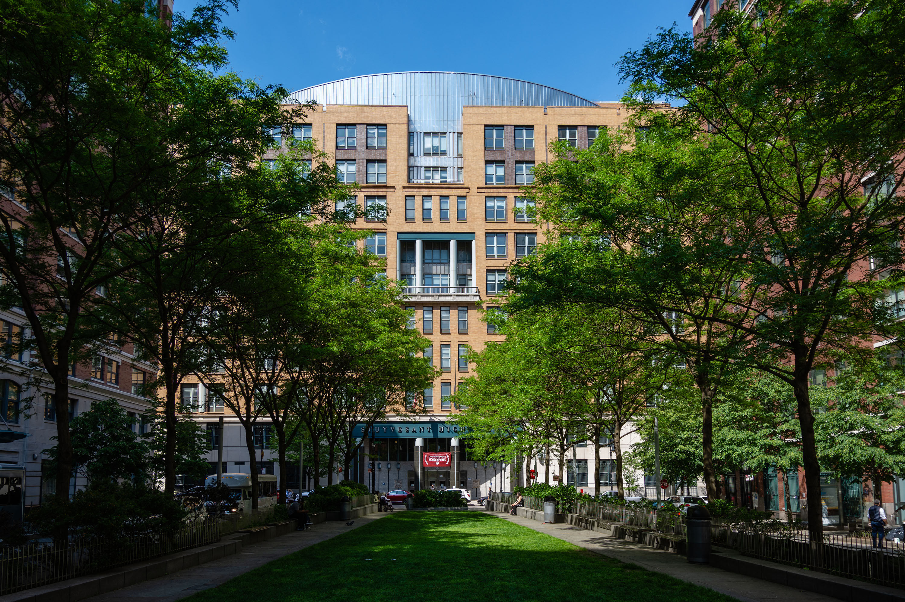
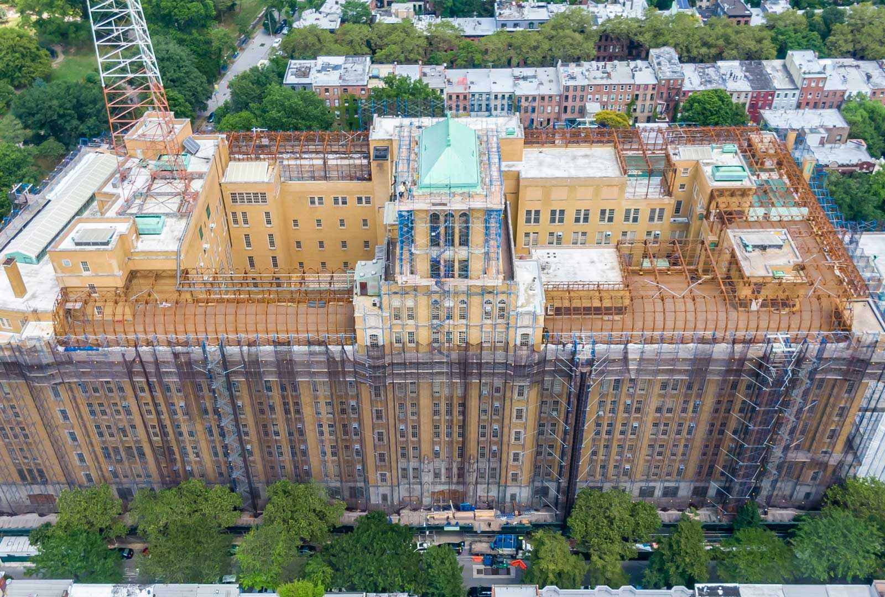
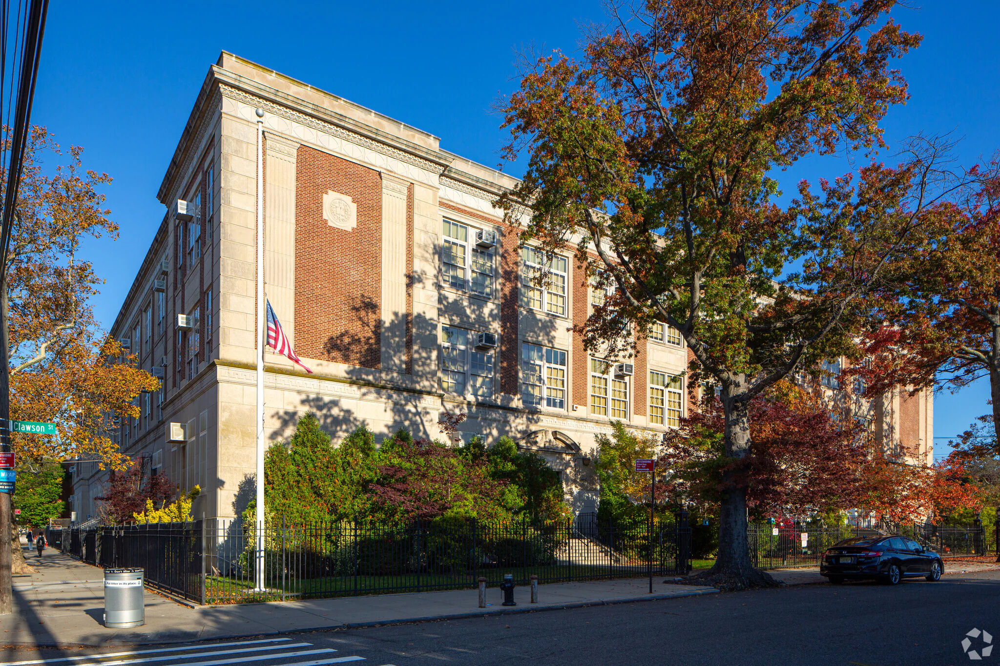
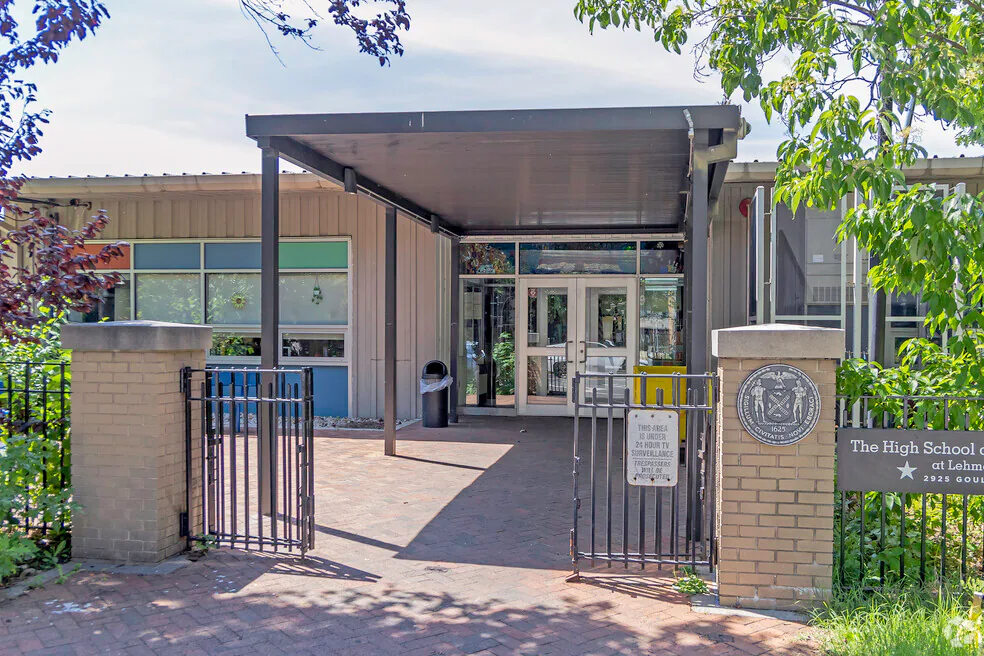
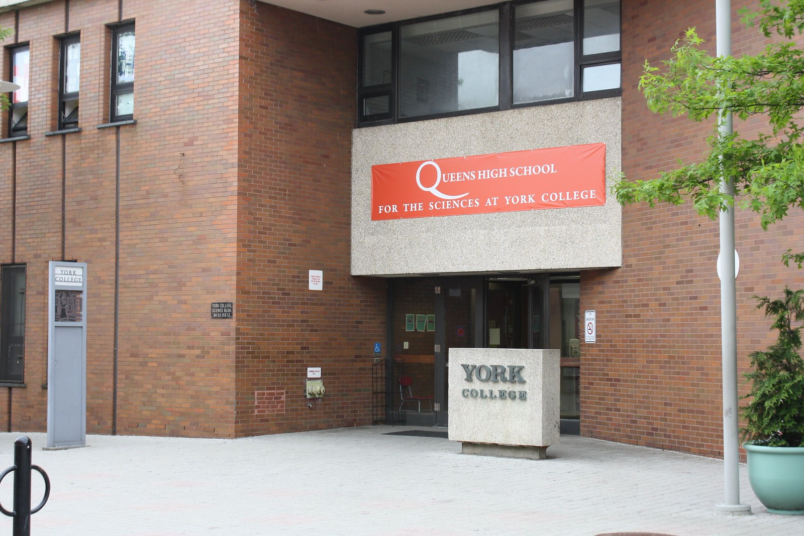
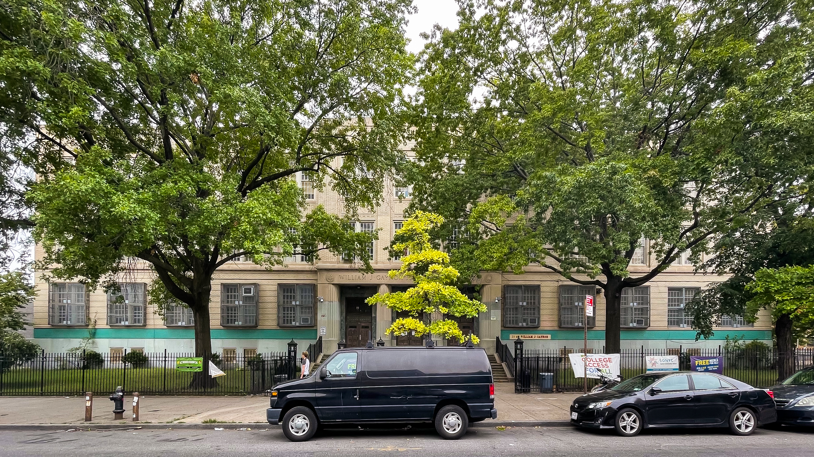

Una guía gratuita para familias hispanohablantes en la ciudad de Nueva York.
Empieza aquí →de los estudiantes de NYC son hispanos
de las ofertas a escuelas especializadas van a estudiantes hispanos
"Esta brecha no refleja una falta de capacidad. Refleja una falta de información accesible."
Fuente: NYC Department of Education, Ciclo de Admisiones 2025
Son 8 escuelas secundarias públicas en Nueva York —completamente gratuitas— reconocidas entre las mejores del mundo. La admisión se basa exclusivamente en el puntaje del SHSAT.

Manhattan. La más competitiva, reconocida mundialmente por sus programas de ciencias y matemáticas.
El Bronx. Enfocada en ciencias e investigación. Una de las más prestigiosas del país.

Brooklyn. La más grande. Ofrece programas en ingeniería, arquitectura y tecnología.

Staten Island. Pequeña y altamente competitiva, enfocada en ciencias y tecnología.

El Bronx. Enfocada en humanidades, historia americana y ciencias sociales.

Queens. Enfocada en ciencias y matemáticas avanzadas.
Manhattan. Enfocada en ingeniería y matemáticas, en el campus de CCNY.

Brooklyn. Currículo clásico con latín. El puntaje de corte más accesible de las ocho.
Esta guía cubre todo lo que necesitas saber. Elige el tema que más te interesa.